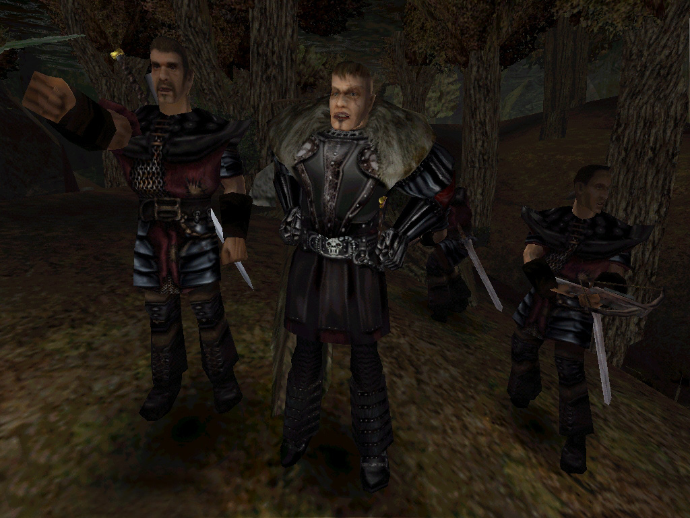
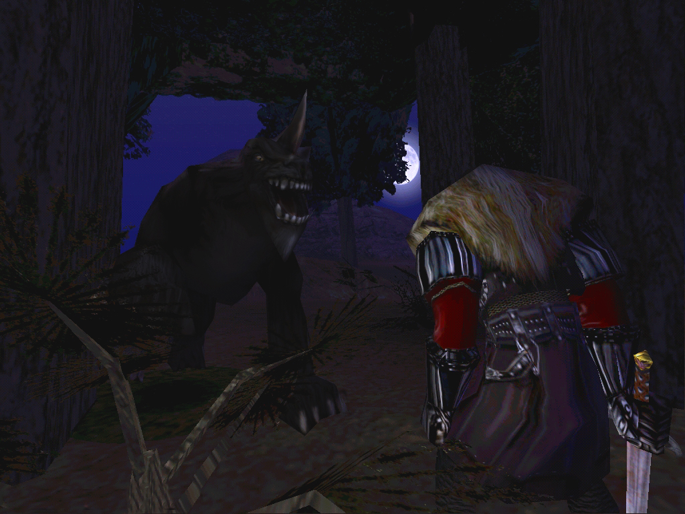
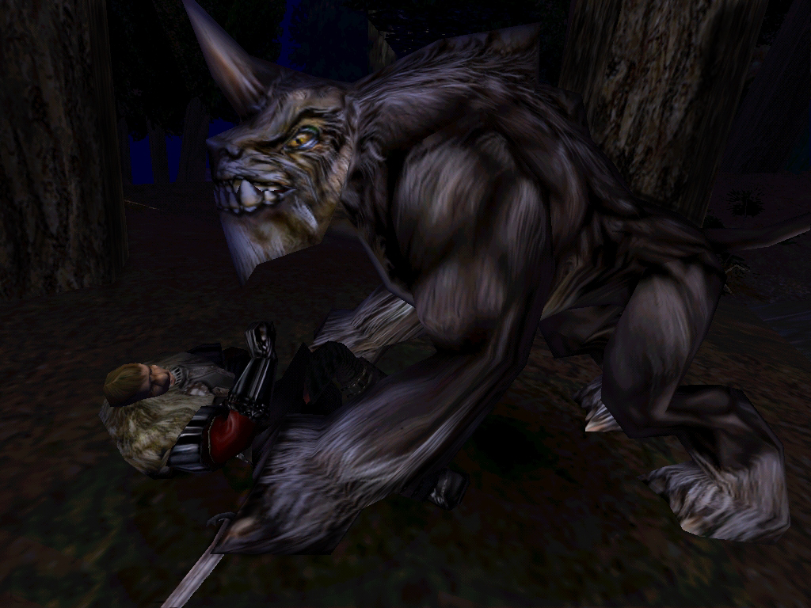
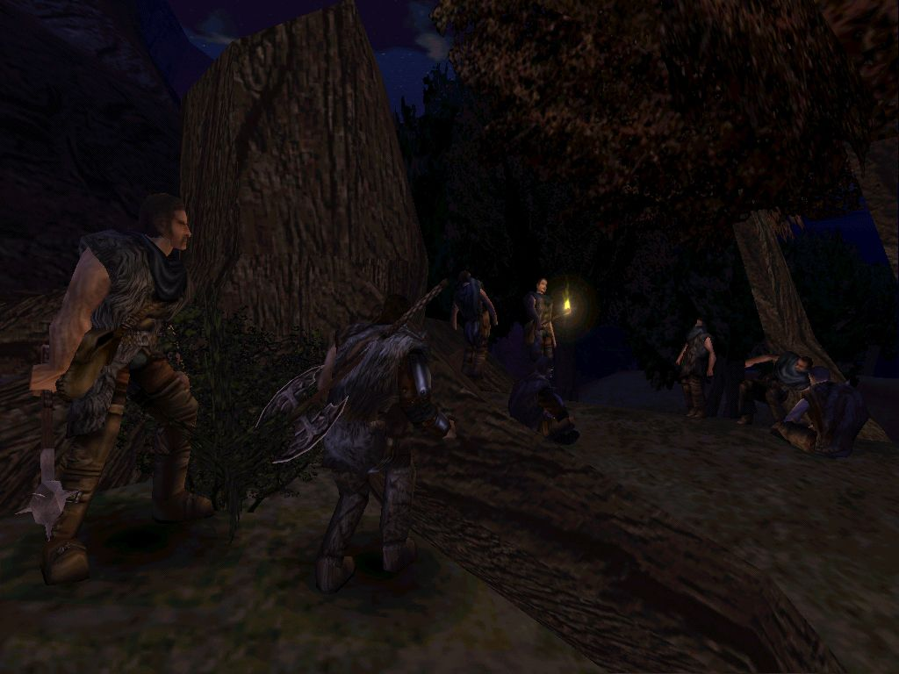
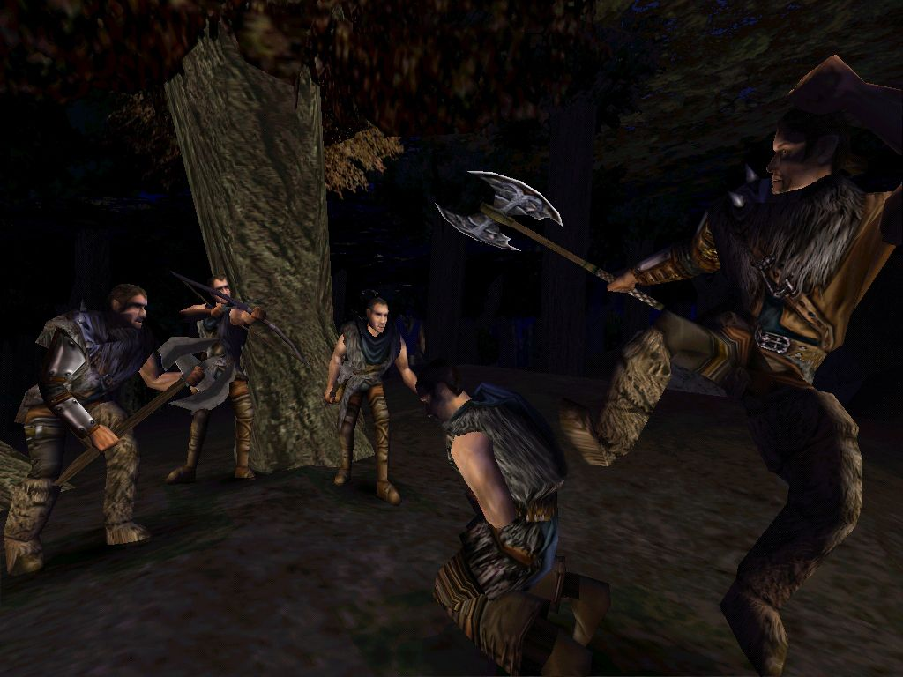
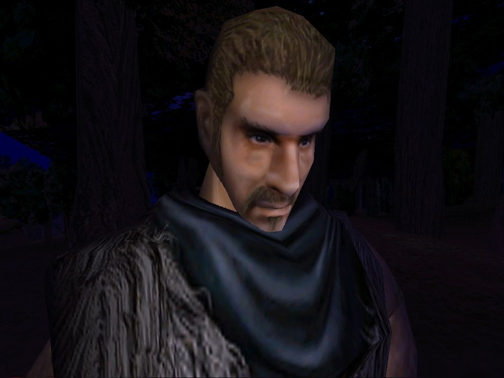
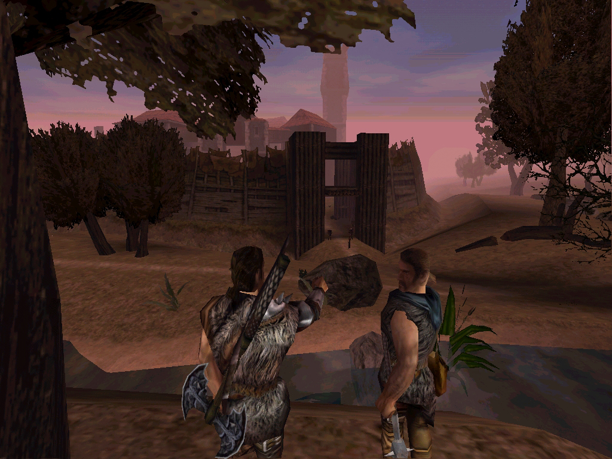

<link href="style.css" rel="stylesheet"/>

<article>
	<h1><a href="../../">../</a> Screenshot Story<br></h1>

	
	<p>"Was ist passiert? Das ist doch Fletcher!"
		War er nicht bei der vermissten Patrouille gewesen? Wo war der Rest
		der Patrouille?" Ich wußte gar nichts mehr. Wir waren doch gar nicht
		weit vom Alten Lager entfernt! Ich spürte, wie die Panik sich langsam
		durch meine Eingeweide fraß...</p>

	
	<p>Meine Angst übernahm die Kontrolle. "Ich muß das Lager warnen."
		Ich hetzte zurück. "Die Garde wird den Schuldigen schon finden und
		zur Strecke bringen. Niemand tötet ungestraft ein Mitglied der Garde.
		Das war ein Angriff auf die Erzbarone selbst - unglaublich!" Schon
		von weitem rufend erreichte ich das Alte Lager.</p>

	
	<p>Scar selbst nahm die Sache in die Hand. Ich konnte es nicht fassen.
		Wir waren nun zu viert. Scar, zwei weitere Gardisten und ich waren
		ausgezogen, die Spur aufzunehmen. Ich war immer noch voller Angst.
		Doch was sollte ich machen? Scar wird schon wissen, was zu tun ist.
	Allen Mut zusammennehmend zeigte ich Scar die Fundstelle und die
		Spuren, die in den Wald führten.</p>

	
	<p>Es war Nacht geworden. Wir waren der Spur eine lange Zeit gefolgt
		und wussten noch immer nicht, mit wem oder mit was wir es zu tun
		hatten. Was war das? Ein alptraumhaftes Brüllen war zu hören und als
		ich zu Tode erschrocken in die Richtung des Lärms starrte, gefror
		mir das Blut in den Adern. Alles, nur das nicht! Damit hatte ich nie
		gerechnet...</p>

	
	<p>Ein Shadowbeast!! Ich hatte noch nie zuvor eines gesehen und ich
		kannte auch niemanden, der eine Begegnung mit diesem Monstrum
		überlebt hatte. Es ging sofort zum Angriff über. Sein Sprung zielte
		direkt auf Scars Kehle. Scar wich zurück, und wenn er nicht so ein
		wendiger Kämpfer gewesen wäre, hätte ihn das Shadowbeast
		augenblicklich getötet. Ich war unfähig mich zu rühren, geschweige
		denn einzugreifen. Aus weiter Ferne hörte ich unsere
		Armbrustschützen fliehen. Scar setzte zum Gegenangriff an und der
		tödliche Tanz begann.</p>

	
	<p>Scar war gut. Einer der Besten. Er tänzelte um das Monster herum
		und wich gekonnt seinen mächtigen Prankenhieben aus. Immer wieder
		stieß er mit seinem Schwert nach dem Gegner. Doch seine Treffer
		schienen das Shadowbeast nur immer weiter zu reizen. Scar blutete aus
		vielen kleinen, kraftraubenden Wunden. Er strauchelte und das
		Shadowbeast traf ihn mit voller Wucht. Er verlor sein Schwert und
		fiel nach hinten, sofort war die Bestie über ihm. Ich stand immer
		noch wie angewurzelt daneben und sah, wie sie langsam ihren Kopf hob
		und in meine Richtung schaute...</p>

	
	<p>Die Angst traf mich wie ein Keulenschlag. Ich rannte so schnell wie
		noch nie in meinem Leben. Ich brach durch das Unterholz, nach links,
		rechts, durchs Gebüsch. Es war so finster, dass ich die Hand nicht vor
		Augen sah. Hinter mir das Shadowbeast, das immer näher kam. Da, eine
		Lücke zwischen den Bäumen! Ich hetzte auf sie zu und schlagartig wurde
		mir klar, dass ich einen Fehler gemacht hatte. Vor mir ein Abgrund,
		rechts und links Felsen. Ich zögerte keinen Augenblick und sprang in
		den schwarzen Abgrund. Das Letzte, was ich hörte, war ein
		ohrenbetäubendes Brüllen.</p>

	
	<p>Ich fiel in die Dunkelheit, sah die Wasseroberfläche erst, als ich
		aufkam. Das Wasser verschlang mich und ich verlor die Orientierung.
		Verzweifelt versuchte ich an die Oberfläche zu gelangen - Da! Ich sah
		Mondlicht. Ich hielt es nicht mehr aus, riss den Mund auf und saugte
		die frische, kühle Nachtluft ein, dann spürte ich, dass ich am ganzen
		Leib zitterte. Ich schleppte meinen Körper mit all meiner letzten Kraft
		zum Ufer und blieb, mein Gesicht fest in den Uferschlamm gedrückt,
		dort liegen, bis ich Schritte hörte. Ich blickte auf und sah einen
		großen Kerl der mich musterte, sein Blick blieb für einen Moment an
		meiner Uniform hängen, dann streckte er seine Hand aus, um mir hoch
		zu helfen.</p>

	
	<p>Ich rappelte mich auf und kaum, dass ich stand, fuhr mir ein Schreck
		durch die Glieder. Im Licht einer Fackel sah ich da vier fiese Kerle,
		bis an die Zähne bewaffnet, die näher traten. Einer von ihnen, es schien
		ihr Anführer zu sein, richtete seine Armbrust auf mich und bellte: "Was
		treibst Du hier, Gardist?" und spuckte verachtend auf den Boden.</p>

	
	<p>"Los, mitkommen!" Ihr Anführer, Lee, schaute mich mit stechendem Blick
		an. Sie waren ganz eindeutig Söldner, Angehörige des Neuen Lagers und
		somit auf mich, einem Gardisten, nicht wirklich gut zu sprechen. Die
		Vier nahmen mich in ihre Mitte und marschierten los. An Flucht war
		nicht zu denken. Dieser Gang ins Ungewisse erinnerte mich daran, wie
		ich nach der Gerichtsverhandlung unverzüglich zum Rand der Klippe
		gebracht und in dieses Gefängnis geworfen wurde. Ich war wie betäubt,
		wieder einmal wusste ich nicht, wohin ich ging und was mich
		erwartete...</p>

	
	<p>"Der gleiche Gestank wie bei uns im alten Lager", fuhr mir als erstes
		durch den Kopf, als wir das Camp erreichten. Neben einem gestauten
		kristallklaren Bergsee lag in einer riesigen Berghöhle das Neue Lager.
		Es wirkte gut zu verteidigen, bot Sicherheit, die Wärme der Feuer ging
		nicht verloren und der Rauch hatte genug Platz zum entweichen. Viele
		Augenpaare musterten mich aufmerksam, versuchten zu erkennen, ob ich
		Freund oder Feind war. Wie sollten sie es, ich wusste es ja selber
		nicht.</p>

	
	<p>Ich stand und schaute auf Lee, der lässig auf einem Hocker saß und
		mich eindringlich musterte. Bei ihm waren Lares, der Typ, der mich aus
		dem Wasser gefischt hatte und ein Magier in blauer Robe, der sich im
		Hintergrund hielt. Lee begann mir Fragen zu stellen, einige die direkt
		mit meiner feigen Flucht aus dem Alten Lager zusammenhingen aber auch
		Fragen, die scheinbar nichts damit zu tun hatten. "Wo führte dieses
		Gespräch hin?" - Ich wusste es nicht, aber mir war klar, dass sich
		jetzt und hier meine Zukunft entscheiden würde. Aber Lee schien mit
		meinen Antworten nicht unzufrieden zu sein...</p>

	
	<p>Plötzlich fand ich mich zusammen mit Lee, Lares und dem Magier auf dem
		Dorfplatz wieder. "Hör zu Lares, Gjan ist längst überfällig. Er wollte
		gestern Abend zurück sein, aber ist bisher nicht wieder aufgetaucht.
		Finde heraus, wo er steckt. Finde ihn."Lares nickte zustimmend, wandte
		sich doch noch einmal an Lee: "Okyl kommt mit mir", sprach er bestimmt.
		Lees Blick schien mich zu durchbohren, er überlegte. "Gib dem Mann eine
		Waffe und andere Kleidung. Dann macht Euch auf den Weg!" Ich bekam
		einen mit Nägeln versehenen Streitkolben und Lares besorgte mir was
		zum Anziehen. Nach außen hin sah ich nun aus wie ein Organisator.
		Merkwürdiges Gefühl. Ich hatte offensichtlich ein neues Zuhause.
		Wir zogen los.</p>

	
	<p>Wir fanden Gjans Lagerplatz. Es hatte einen Kampf gegeben. Lares fand
		die Spuren von mehreren Männern, die vom Lagerplatz aus Richtung Osten
		fortführten. Wir folgten ihrem Weg, bis wir an den Fuß eines Berges
		kamen. Sie hatten ihr Lager in einem Waldstück in der Nähe des Berges
		aufgeschlagen. Ihre Wachen waren nicht besonders aufmerksam, man konnte
		sie schon von weitem hören. Wir schlichen uns heran. Hinter einen großen
		Baumstumpf gekauert, beobachteten wir die Banditen. Wir hätten sie fast
		berühren können...</p>

	
	<p>Mein Kehle war wie zugeschnürt. Ein falscher Blick, das kleinste
		Geräusch und wir würden entdeckt. Ich hielt die Luft an und beobachtete
		das Treiben der sechs Gestalten im Flackern des Lagerfeuers. Es kam
		Leben unter die Banditen. Ihr Anführer, ein Riese von einem Mann mit
		einer riesigen Kampfaxt schien beunruhigt. "Ihr Zwei! Los, sucht die
		Gegend ab. Das Neue Lager wird etwas unternehmen. Ich trau dem Braten
		nicht." Zwei der Banditen griffen sich ihre Waffen und verließen die
		Lagerstätte der Abtrünnigen. Lares wandte sich zu mir: "Das ist unsere
		Chance. Sie sind nur noch zu viert."</p>

	
	<p>Ohne eine Antwort abzuwarten, packte Lares seine Axt und sprang über
		den Baumstumpf, der uns Deckung bot. Einen Banditen erledigte er mit
		einem Sprungtritt in den Rücken, gefolgt von einem tödlichen Axthieb
		direkt in den Kopf. Er ging sofort nieder. Die anderen Drei schienen
		nicht im mindesten überrascht. Sie wirbelten herum und zogen ihre
		Waffen.	Ich war unfähig Lares zu folgen. Ich würde sterben, das war
		mir klar.	So sah ich, in meinem sicheren Versteck sitzend, wie Lares
		weiter vorpreschte.</p>

	
	<p>Lares war von den Banditen umringt. Er duckte sich, parierte und
		versuchte Treffer anzubringen. Es war nur eine Frage der Zeit, wann er
		verlieren würde, sie waren zu viele. Die Situation war aussichtslos:
		Der Anführer vor ihm, bereit zur Attacke, von hinten kam einer der
		Banditen, in der Hand einen mächtigen Streitkolben. Ich reagierte ohne
		nachzudenken, zog meine Waffe und sprang mit einem mächtigen Sprung
		mitten ins Gemetzel um Lares zur Seite zu stehen.</p>

	
	<p>Der Kampf dauerte nicht lange. Den Einen hatte ich bei meinem
		Sturmangriff sofort getötet. Rücken an Rücken stehend erledigten wir
		auch bald die anderen Banditen. Plötzlich war keiner mehr da, ich
		konnte es noch gar nicht glauben. Völlig ausgepumpt stand ich da, die
		blutverschmierte Waffe in der Hand. Der Schweiß brannte in den Augen.
		Lares drehte sich zu mir um und streckte mir seine Hand entgegen:
		"Danke, ich wusste Du würdest mich nicht im Stich lassen." Ich war
		sprachlos. Er hatte mir blindlings vertraut und ich hätte ihn beinahe
		enttäuscht. Es war wie immer, wenn es ernst wurde war ich unfähig zu
		handeln.</p>

	
	<p>"Wir können fähige Männer gut gebrauchen, willst Du nicht bei uns im
		Neuen Lager bleiben? Ich habe sehr viel Einfluss bei den Organisatoren
		und wenn Du willst kann ich ein gutes Wort für Dich einlegen." Ich war
		wie vor den Kopf gestoßen. Gestern war ich noch ihr Gefangener und
		heute sollte ich zu Ihnen gehören. Die Geschehnisse der letzten Tage
		kamen mir in den Sinn. Es war so viel passiert: Scars Kampf gegen das
		Shadowbeast und meine feige Flucht aus dem Alten Lager, meine
		Gefangennahme durch Lee und Lares und jetzt der Kampf gegen die
		Banditen. Sollte ich Lares Angebot annehmen, hatte ich das Recht dazu?
		Sie würden sich auf mich verlassen, würde ich sie auch enttäuschen,
		wie ich alle bisher enttäuscht hatte...</p>

	
	<p>Die Frage quälte mich den gesamten Rückweg zum Neuen Lager. Wie
		sollte ich mich entscheiden? Sollte ich dem Neuen Lager beitreten,
		oder sollte ich weiter alleine durch die Lande ziehen? Was würde
		passieren, wenn ich alleine blieb? Kein Mensch konnte in dieser
		verdammen Welt alleine lange überleben.<br>
	Ich beobachtete Lares und Gjan, die ein paar Meter voraus gingen.
		Sie schienen unbeschwert und lachten ständig. Ich wollte daran
		teilhaben, konnte es aber nicht, ich gehörte nicht dazu. Meine
		schwermütigen Gedanken wurden von lauten Jubelrufe unterbrochen.
		Wir waren da. Ich hatte das Gefühl, als wenn das halbe Lager auf uns
		zugelaufen käme. Ich wurde als Retter Gjans gefeiert.</p>

	
	<p>Es wurde eine ausgelassene Feier, die für uns, die Retter von Gjan
		abgehalten wurde. Irgendwann, zu später Stunde kam Lares auf mich zu.
		Sein Gesicht war gerötet von zuviel Alkohol und dem übermäßigen Genuss
		von Rauschkraut.<br>
	Er sah mich an: "Okay, wie hast Du dich entschieden?" Seine Worte
		drangen wie scharfer Stahl in meine Gedanken und beraubten mich jeder
		guten Laune. Mir war klar, ich musste mich jetzt entscheiden. "Ich bin
		dabei."<br>
	Die Antwort kam ohne nachzudenken und kaum hatte ich es gesagt lief mir
		ein kalter Schauer über den Rücken und in meinem Magen formte sich ein
		mächtiger Kloß, wir war schlecht.<br>
	Lares sah mich an und grinste: "Lass uns trinken." Er trank seinen
		Reisschnaps mit einem Zug aus. Ich tat es ihm nach. Der bittere
		Geschmack des Getränkes schaffte es nicht einmal Ansatzweise meine
		Zweifel zu betäuben.<br>
	"Dein Gesellenstück hast Du ja schon gemacht, jetzt werden wir uns mal
		der Meisterprüfung widmen. Morgen werden wir beide ins Alte Lager
		schleichen und den Erzbaronen das Erz der letzten Woche klauen." Ich
		war wie vor den Kopf gestoßen. Das konnte er nicht ehrlich meinen.</p>

	
	<p>Ich hatte keine Wahl, ich musste ihn begleiten. Ich konnte nicht
		schon wieder davonrennen. In Gedanken sah ich mich als Gardist mit
		meinen Kameraden feiern. Das waren mal meine Freunde. Ich hatte sie
		im Stich gelassen und bald würde ich sie berauben. Aber diesmal würde
		ich nicht kneifen, diesmal würde ich die Leute, die Vertrauen in mich
		setzten, nicht im Stich lassen. Ich war kein Gardist mehr. Jetzt war
		ich Organisator. Wir brachen gegen Mittag auf und kamen gegen Abend
		in die Nähe des Alten Lagers. Da stand ich nun. Auf einem Hügel unweit
		des Alten Lagers und schaute auf das große, gut bewachte Haupttor.
		Wie oft hatte ich dort gestanden.<br>
	Ein seltsames Gefühl. "Sieh sie Dir an. Sie sind sadistische Schweine,
		für eine Mahlzeit mit den Erzbaronen würden sie ihre Kameraden
		umbringen." Ich wusste, dass Lares recht hatte. Sie waren nie meine
		Freunde	gewesen. Die Erkenntnis schmerzte, doch sie gab mir auch
		Kraft. "Ich	weiß wie wir reinkommen. Der Hintereingang ist nur von
		einem	Gardisten bewacht. Wenn wir Glück haben, können wir an ihm
		vorbeischleichen." - "Gehen wir!" Ohne ein weiteres Wort lief Lares
		los. Ich folgte ihm.</p>

	
	<p>Wir mussten das Lager umkreisen um zum Hintereingang zu kommen. Ich
		wusste, dass auf diesem Posten sehr viel geschlafen wurde. Er war
		einfach zu langweilig. Dort passierte nie etwas. Ich habe nie
		verstanden, warum sie nicht einfach das Tor schlossen. Der
		Hintereingang war ein eingestürzter Turm. Die noch vorhandenen
		Turmmauern warfen tiefschwarze Schatten und hüllten uns in
		Dunkelheit. Die Wache war keineswegs eingeschlafen, sondern lief
		vor dem Tor auf und ab. Ich blickte mich zu Lares um: "Was sollen
		wir machen?" Wortlos guckte er an mir vorbei zur Wache: "Warten!"
		Es dauerte etwa 20 Minuten, bis die Chance da war. Der Wachposten
		stand mit dem Rücken zum Tor und erleichterte seine Blase. Jetzt
		oder nie fuhr es mir durch den Kopf... Leise schlichen wir zum Tor.
		Ich war nervös, ich fürchtete mein Herzschlag würde die Wache
		alarmieren. Doch sie bemerkte uns nicht. Wir waren drin.</p>

	
	<p>Wir waren in der Nähe des Marktplatzes und hatten uns in die Büsche
		geschlagen. Aus der Ferne sahen wir eine weitere Wache über den Platz
		in unsere Richtung kommen. Wir duckten uns noch tiefer in die Büsche.
		Der unangenehme Geruch von Urin stieg mir in Nase. Ich musste würgen.
		Die Wache kam immer näher. Sie musste mich unweigerlich hören. Lares
		spannte sich. Er krümmte sich wie ein Bogen, bereit vorzuschnellen
		und alles zu töten, was sich ihm in den Weg stellt. Die Wache kam um
		die Ecke und Lares sprang auf. Wie ein Raubtier auf der Jagd,
		schnellte er vorwärts und legte sein gesamtes Gewicht in einen
		Fausthieb gegen den Kehlkopf des Gardisten. Er hatte keine Chance.
		Er fiel um und versuchte noch etwas zu brüllen, bevor er sein
		Bewusstsein verlor. Doch er schaffte es nicht, kein Laut kam über
		seine Lippen. Wir waren weiter unbemerkt.</p>

	
	<p>Wir zogen den Gardisten in die Büsche und machten uns auf den Weg
		zur Burg, die wie ein mächtiger Berg inmitten des Lagers stand. Es
		gab eine Bresche in der Burgmauer, durch die die Erzbarone ihren
		Abfall warfen. Von da aus würden wir in das Innere der Burg gelangen.
		Lares ging voran und führte mich durch Unmengen von stinkendem Abfall.
		Lares zeigte wortlos auf eine schwarze Öffnung in der Mauer und
		begann auf eine verlassene Hütte zu klettern, die sich unter der
		Öffnung befand. Ich lehnte mich an die Mauer und Lares zog sich, auf
		meinen Schultern stehend zur Öffnung hoch. Oben angekommen, reichte
		er mir seine Hand und zog mich hinauf. Wir waren in das allerheiligste
		des Alten Lagers eingedrungen, wir waren in der Burg.</p>

	
	<p>Wir schlichen durch endloslange Gänge. Vorbei an der Küche und
		Vorratskammern. Durch eine Versorgungsluke in der Decke gelangten wir
		auf den Burghof. "Hier entlang! Dort bei den Ställen." Lares wusste
		genau wo er hin musste. Er schien dem Alten Lager schon öfters mal
		einen Besuch abgestattet zu haben.<br>
	Geduckt, jeden Schatten ausnutzend rannten wir über den Hof. Es war
	niemand zu sehen. Aus den Fenstern drangen undeutliche Stimmen nach
	draußen.<br>
	Vor dem Haus der Erzbarone standen zwei Wachen, aber sie waren weit
		entfernt, zu weit um uns zu entdecken. Es dauerte keine Minute, bis
		Lares die mächtige Holztür vor dem Erzlager geknackt hatte.<br>
	In dem Raum befanden sich zwei große, mächtige Eichentruhen. "Da ist
		es." Dies waren die Erzvorräte des Alten Lagers, jeder hier im Knast
		würde ohne nachzudenken für dieses Erz töten. Ich stellte mir vor,
		was passieren würde, wenn Gomez morgen erfahren würde, dass sein Erz
		geklaut wurde... Ich ging zu einer der Truhen und öffnete sie. "Was
		ist hier los?" Wie aus dem Nichts war eine Wache in der Tür
		erschienen und war gerade im Begriff ihr Schwert zu ziehen. Lares
		wirbelte herum und rannte auf die Wache zu: "Los, weg hier."</p>

	
	<p>Lares ging zum Sturmangriff über. Noch bevor er seine Waffe gezogen
		hatte, war er beim Gardisten. Er riss ihn einfach zu Boden. "Los mach
		schon, wir müssen verschwinden!" Die Wache lag am Boden und rief um
		Hilfe. Ich ließ die Truhe Truhe sein und sprang auf.<br>
	Wir rannten auf den Burghof. Alles leer, nur von der Kaserne kamen
		fünf verschlafen aussehende Soldaten in unsere Richtung. Es gab keinen
		Ausweg; um zum Tor zu kommen, mussten wir an den Gardisten vorbei und
		einen anderen Ausgang gab es nicht. "Zum Schlund!" Ich rannte auf die
		Stelle zu, wo einst der Turm gestanden hatte. Dort ging es steil
		mehrere Meter bergab.<br>
		Lares verstand mich sofort und schloss schnell auf. Wir waren in etwa
		gleichauf als wir sprangen. Ich konnte keinen Boden sehen, es war zu
		dunkel, aus der Ferne hörte ich noch die Schreie unserer Verfolger.
		Dann schlug ich auf.</p>

	
	<p>Es war ein harter Sturz. Zum Glück landeten wir auf einigen Büschen,
		die unseren Sturz bremsten. Ich ignorierte den Schmerz und rappelte
		mich auf. Lares stand schon. Wir liefen los, Richtung Haupttor. Die
		Wachen würden keine Eindringlinge vom Inneren des Lagers erwarten.
		Mit ein bisschen Glück konnten wir einfach an ihnen vorbeirennen. Es
		klappte. Die Wachen hatten ihre Schwerter noch nicht gezogen, da
		waren wir schon an ihnen vorbei. Wir hatten es geschafft, bei der
		Dunkelheit konnte uns im Wald niemand finden und bis zum Morgengrauen
		würden wir wieder im Neuen Lager sein.</p>

	
	<p>Scar kochte vor Wut. Wie konnte dieser Wurm es wagen, ihn, den besten
		Kämpfer des Alten Lagers, in seinem eigenen Lager zu beklauen. Er
		verspürte Hass. Hass war ein ständiger Begleiter seines Lebens. Hass
		hatte ihn in diesen Knast gebracht und Hass hatte ihn in seine
		Position gebracht. Er war der persönliche Leibwächter des mächtigsten
		Mannes innerhalb der Barriere. Niemand bestiehlt ihn, niemand durfte
		es wagen ihn zu verhöhnen. Seine Hände ballten sich zu Fäusten. Das
		wird Konsequenzen haben. Dafür würde er persönlich sorgen.</p>
</article>